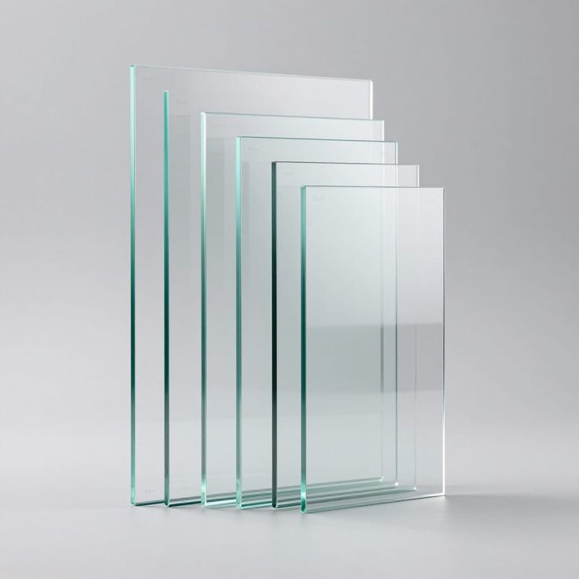

ABOUT OUR GLASS PRODUCTS
At Tensorgrid Ltd, we supply and install a wide range of high-quality architectural glass solutions designed to meet modern construction and design needs. Our glass products combine durability, safety, energy efficiency, and aesthetic appeal to suit residential, commercial, and industrial applications.
Glass plays a critical role in enhancing natural lighting, improving energy performance, and elevating the visual appearance of buildings. Whether for facades, interiors, or specialized applications, our solutions are tailored to deliver both functionality and style.
ORDINARY / ANNEALED GLASS
Overview of Float and Sheet Glass
Ordinary glass, also known as annealed glass, is the most basic form of glass used in construction and glazing. It is produced mainly through two methods: float glass and sheet glass.
Float Glass
Float glass is manufactured by pouring molten glass onto a bath of molten tin, allowing it to spread evenly and form a perfectly flat, smooth surface. This modern process produces high-quality glass with minimal distortion and consistent thickness.
Sheet Glass
Sheet glass is an older manufacturing method where molten glass is drawn or rolled into thin sheets. Compared to float glass, it may have slight surface distortions and variations in thickness, but it is still used in some traditional or low-cost applications.
General Characteristics of Annealed Glass
- Smooth or slightly variable surface (depending on type)
- Easy to cut, drill, and fabricate
- Cost-effective and widely available
- Breaks into sharp shards (not safety glass)
Typical Uses
- Basic window glazing
- Picture frames
- Interior applications
- Base material for further processing (tempered, laminated, etc.)
GLASS TYPES
Clear Glass
Clear glass is transparent and allows maximum natural light transmission, making it ideal for general glazing applications.
Thickness Range: 2mm - 10mm
- High light transmission
- Clear visibility
- Neutral appearance
Applications: Windows, Doors, Shopfronts, Interior partitions
Obscure (Textured) Glass
Obscure glass is designed to provide privacy while still allowing light to pass through. It features patterns or textures that distort visibility.
Thickness Range: 3mm - 6mm
- Enhances privacy
- Diffuses light
- Decorative appearance
Applications: Bathrooms, Office partitions, Doors and windows
Tinted Glass
Tinted glass is produced by adding color during manufacturing to reduce glare and heat from sunlight.
Thickness Range: 3mm - 8mm
- Reduces solar heat gain
- Minimizes glare
- Enhances building aesthetics
- Improves privacy
Common Colors: Grey, Bronze, Green, Blue
Applications: Building facades, Skylights, Office buildings
One-Way (Reflective) Glass
One-way glass, also known as reflective glass, allows visibility from one side while appearing like a mirror on the other under proper lighting conditions.
Thickness Range: 4mm - 6mm
- Daytime privacy
- Reflective exterior finish
- Reduces glare
Applications: Offices, Security areas, Commercial buildings
PROCESSED GLASS
Processed glass is manufactured by enhancing ordinary glass to improve strength, safety, and performance for specialized applications.
Toughened (Tempered) Glass
Heat-treated to increase strength significantly. It breaks into small harmless fragments and has high thermal resistance.
- Shower enclosures
- Glass doors
- Facades
- Railings
Laminated Glass
Two or more layers bonded together with an interlayer that holds glass in place when broken.
- Safety and security
- Holds together when shattered
- Reduces noise
- UV protection
Applications: Skylights, Balustrades, Glass floors, Security glazing
Soundproof (Acoustic) Glass
Specially designed to reduce noise transmission using laminated layers with sound-dampening interlayers.
- Excellent noise reduction
- Maintains clarity and light transmission
- Enhances indoor comfort
Applications: Offices, Hotels, Buildings near highways or airports
Double Glazed Units (Insulated Glass)
Two or more panes separated by an air or gas-filled space to improve insulation.
- Thermal insulation
- Energy efficiency
- Noise reduction
- Reduces condensation
Applications: Windows, Curtain walls, Residential and commercial buildings
Fire Rated Glass
Designed to withstand high temperatures and prevent the spread of fire, smoke, and heat.
- Fire resistance (20 to 120 minutes)
- Maintains visibility during fire
- Enhances building safety
Applications: Fire doors, Emergency exits, Staircases, Commercial buildings
Bullet Resistant Glass
Multi-layered laminated glass designed to resist ballistic impact.
- High-impact resistance
- Enhanced security
- Multi-layer construction
Applications: Banks, Security installations, Government buildings, High-risk areas